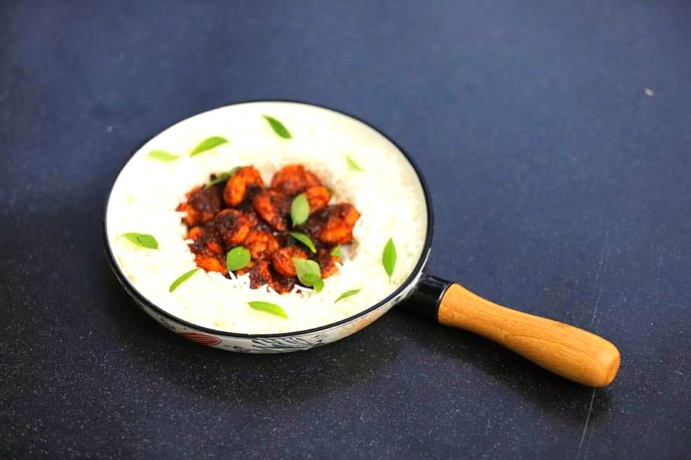

Contains: crustacean shellfish
Ingredients
Quantities for 4.
- 500g, medium, shelled and deveined Prawns
- 2 medium, finely chopped Onion
- 2 medium, finely chopped Tomato
- 10 cloves Garlic
- 3cm piece Ginger
- 8, stemmed and soaked Dried Red Chilli
- 1 tsp Kashmiri Chillifor colour
- 1.5 tsp Cumin Seeds
- 3/4 tsp Turmeric
- 1 tbsp Coriander Powder
- 40g pulp, soaked in 100ml hot water Tamarind
- 2.5 tbsp, grated Jaggery
- 1 tbsp Vinegar
- 12 Curry Leavesoptional
- 1/4 cup, chopped Coriander Leavesoptional
- 4 tbsp Neutral Oil
- to taste Salt
Cookware
stovetop, kadhai, blender
Checked against the ingredient list for ten allergens: milk, egg, fish, crustaceans, tree nuts, peanuts, sesame, mustard, soy and gluten. Brands vary, so read the label on anything new to you.
Before you start
- Soak the dried red chillies in hot water for 20 minutes before grinding, or the masala will stay gritty.
- Toss the prawns with 1/2 tsp turmeric and 1 tsp salt and leave 15 minutes, then rinse and pat dry.
- Squeeze the tamarind and strain out the fibres and seeds before you begin cooking.
Method
- Grind the soaked chillies, garlic, ginger, cumin seeds, kashmiri chilli and 2 tbsp of the soaking water to a smooth red paste.Grind it properly smooth. Patio should be a paste-thick masala, not a chunky curry.
- Heat the oil in a kadhai and fry the curry leaves for 20 seconds until they crackle and go translucent.
- Add the onion and cook 10 minutes over medium heat until soft and pale gold.
- Add the ground masala and fry 6 to 8 minutes, stirring constantly, until the oil pools around the edges and the raw garlic smell disappears.This is the whole dish. Under-fried masala tastes harsh no matter how much jaggery you add later.
- Stir in the turmeric, coriander powder and tomato and cook 6 minutes until the tomato has collapsed completely.
- Add the tamarind extract, jaggery, vinegar and salt and simmer 5 minutes to a thick, glossy masala.
- Taste and balance the three points. Sour, sweet, hot. It should be assertive on all three, since the prawns will mute it.
- Slide in the prawns, stir to coat, and cook 3 to 4 minutes only, until they curl and turn opaque.Prawns go rubbery the moment they overcook. Take the pan off the heat while they still look barely done.
- Rest 5 minutes off the heat, scatter with coriander leaves, and serve with plain rice or rotli.
Safe temperatures: Prawns, crab and squid are done when the flesh is opaque and pearly right through. Reheat leftovers to 74°C / 165°F. FoodSafety.gov
Storage
Keeps 2 days refrigerated. Reheat only until warm through. A second full simmer will toughen the prawns. The masala base alone freezes 2 months.
Nutrition Medium estimate
High protein: 28 g a serving, 32% of the calories
| Per serving291 g | Per 100 g | |
|---|---|---|
| Calories | 346 kcal | 119 kcal |
| Protein | 27.7 g | 10 g |
| Carbohydrate | 27.9 g | 10 g |
| of which sugars | 17.4 g | 6 g |
| Fibre | 3.4 g | 1 g |
| Fat | 15.3 g | 5 g |
| of which saturated | 1.7 g | 1 g |
| of which unsaturated | 12.6 g | 4 g |
Ingredients given to taste count as zero, so the real figures run a little higher. Nearest database match used for curry leaves, jaggery. Estimated from raw ingredients using USDA FoodData Central.
More like this: Gluten-free Indian recipes · Dairy-free Indian recipes · Parsi recipes
Times, yields, allergens and nutrition are guidance. Use your own judgement on doneness and on storing. More in About.